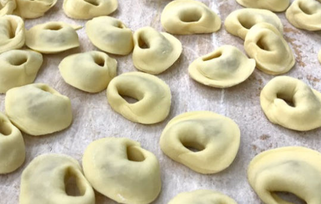

Recetas
Inicio
Salado
Capeletis
Ingredientes
Tapa de copetín 12
Mozzarella 200gr
Cheddar 80gr
Panceta 100gr
Cebolla de verdeo 1 ramita

Preparación
Poner el relleno en la tapa y dar forma a los capeletis. Hervir durante 8-10 min.